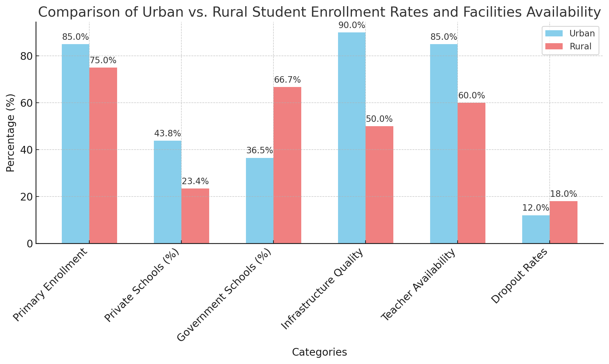

A Beautiful Mind (2001)
The Unfolding Story: A System in Question
"Classes will dull your mind." This thought-provoking quote from *A Beautiful Mind* mirrors the very essence of a dilemma faced by millions within India’s education system. Are we nurturing creativity and critical thinking, or are we merely producing individuals adept at rote learning? The question demands an exploration into the ethical layers of our education system, interwoven with socioeconomic realities, outdated methodologies, and policy aspirations such as NEP 2020.
Introduction: Unveiling Ethical Challenges in India’s Education System
The Indian education system—a mammoth network serving over 250 million students—faces an ethical conundrum. It aspires to foster universal education while grappling with inequities, resource limitations, and a focus on standardized testing. NEP 2020 emerged as a beacon of change, promising reforms to tackle these systemic issues. But as with all ambitious endeavors, its implementation has unearthed a complex web of challenges.
Ethical Issues in India's Education System: A Complex Web
1. Socioeconomic Disparities and Unequal Access to Education
Education is often described as the great equalizer. Yet, in India, it remains a privilege inaccessible to many. Students from underprivileged backgrounds face barriers such as inadequate infrastructure, untrained educators, and a lack of digital access. Rural schools—particularly those in underserved regions—struggle with basic necessities.
rural vs. urban student enrollment rates and facilities availability.
NEP 2020 aims to address this by promoting "universal access" to quality education. However, the allocation of resources tells a different story. Investment in digital tools—essential for bridging the rural-urban gap—remains concentrated in urban hubs. This raises an ethical question: Can equity be achieved without equitable distribution of resources?
2. Teacher Training and Quality of Education
At the heart of any education system is its teachers. Unfortunately, in India, teacher training and support are inconsistent at best. Government schools, often the only option for rural families, rely heavily on outdated teaching methods. Teacher absenteeism further compounds the issue, leaving students ill-equipped for real-world challenges.
Nishant Saxsena, in an article of Times Of India mentions, "India boasts a rich tapestry of cultures and experiences, but a stark divide separates its rural and urban landscapes. This disparity extends to education, with a 2021 Unesco report highlighting a significant gap in student-teacher ratios (25:1 in rural areas compared to 18:1 in urban areas)."
NEP 2020 proposes a revamp, emphasizing continuous professional development. However, systemic issues—such as poor infrastructure and lack of accountability—impede progress. Ethical concerns arise: How do we ensure that every child, regardless of their geographic or economic background, receives quality instruction?
3. The Pressure on Students: Mental Health Crisis
The weight of academic success in India often feels like a Sisyphean task for students. High-stakes exams such as IIT-JEE and NEET dominate the narrative, pushing students into a cycle of stress and anxiety. The result? A growing mental health crisis, with increasing reports of depression and burnout among young learners.
While NEP 2020 acknowledges the importance of mental health, its implementation is sporadic. Schools often lack trained counselors, leaving students without essential emotional support. The ethical implications are stark: Can we continue to prioritize scores over students' well-being?
Placeholder: Insert a graph depicting rising mental health issues among students in correlation with academic pressures.
4. Inclusivity: Education for All or Education for the Few?
Inclusivity lies at the heart of NEP 2020, but reality paints a different picture. Marginalized groups—including tribal communities, children with disabilities, and girls in rural areas—still face significant barriers. Infrastructure remains inaccessible, and biases—both societal and systemic—persist.
Efforts to integrate these groups are underway, but challenges abound. For example, while policies exist to support children with disabilities, their execution remains fragmented. The result? Many students fall through the cracks of an education system that struggles to live up to its inclusive ideals.
Placeholder: Add statistics on school enrollment rates for marginalized communities.
The Vision of NEP 2020: Reforms for the Future
NEP 2020 aspires to revolutionize India’s education system by addressing its fundamental flaws while paving the way for a more equitable and innovative future. With its focus on holistic and multidisciplinary education, the policy envisions students evolving as critical thinkers, creators, and problem solvers. This aligns closely with the nation’s long-term objective of fostering an inclusive society driven by intellectual and ethical excellence.
At its core, NEP 2020 emphasizes moving away from rote memorization toward fostering creativity and critical thinking. This shift is reflected in proposed curriculum changes, designed to create lifelong learners equipped for dynamic, real-world challenges. By integrating vocational education early in the learning process, the policy also aims to make education more practical and industry-relevant.
However, the realization of this vision is deeply intertwined with systemic reforms, substantial resource allocation, and bridging the gaps between policy design and implementation. For instance, while the focus on Early Childhood Care and Education (ECCE) recognizes the importance of foundational literacy and numeracy, it requires significant infrastructure investment and workforce training—elements currently lacking in many regions.
[Placeholder: Add a graph showcasing the state-wise distribution of ECCE infrastructure and literacy rates before and after NEP 2020 implementation]
Challenges in Implementing NEP 2020: A Critical Review
While NEP 2020 presents a comprehensive blueprint for reform, its implementation remains fraught with challenges. The stark rural-urban divide continues to obstruct equitable access to quality education. In many rural regions, schools are under-resourced, and teachers struggle with inadequate training and infrastructural support. Consequently, the disparity in learning outcomes persists despite policy interventions.
One of the most ambitious aspects of NEP 2020 is its emphasis on digital learning. However, the rapid shift to online education during the COVID-19 pandemic revealed significant gaps in digital infrastructure. Rural and economically weaker sections of society faced acute challenges, from the lack of internet connectivity to the unaffordability of devices like smartphones and laptops. This raises the ethical dilemma of whether pushing digital education without addressing these barriers might inadvertently widen existing inequalities.
[Placeholder: Include a chart comparing internet penetration rates in rural versus urban India and its correlation with digital learning outcomes]
Moreover, the policy’s decentralized implementation strategy leaves much to the discretion of state governments and local educational bodies. While this approach aims to cater to regional needs, it has also resulted in inconsistent progress. States with better resources and governance structures tend to advance more rapidly, leaving less-developed states lagging. A cohesive national framework with robust monitoring mechanisms is essential to mitigate this imbalance.
[Placeholder: Insert statistics on state-wise NEP 2020 implementation progress, highlighting disparities]
Integrating Mental Health and Well-being into Education
The mental health crisis among Indian students, exacerbated by intense academic pressure and societal expectations, is one of the most pressing ethical issues in education today. NEP 2020 recognizes this challenge by advocating for the inclusion of mental health awareness and counseling services in schools. Yet, ground-level implementation remains sporadic at best, particularly in rural areas where awareness and resources are minimal.
The culture of high-stakes examinations, which dominates the Indian education system, further compounds this issue. The pressure to secure admission into prestigious institutions often leads to severe stress, anxiety, and in extreme cases, suicide. Addressing this requires a systemic overhaul, not only of examination structures but also of the societal mindset that equates academic performance with self-worth.
[Placeholder: Add a bar chart illustrating the rise in student stress levels and mental health issues over the past decade]
Incorporating life skills education, mindfulness practices, and accessible mental health resources into the curriculum can foster a healthier and more supportive learning environment. Schools and policymakers must prioritize these initiatives to ensure that education nurtures both intellectual and emotional well-being.
Inclusivity: A Vision Yet to Be Realized
Inclusivity is a cornerstone of NEP 2020’s vision, aiming to provide equitable education opportunities for marginalized communities. However, the gap between policy ideals and real-world outcomes remains significant. Children with disabilities, girls from rural areas, and tribal students often face systemic barriers that prevent them from fully participating in the education system.
For instance, schools frequently lack basic infrastructure, such as ramps and accessible toilets, required to accommodate students with disabilities. Additionally, cultural biases and financial constraints often discourage families in rural areas from prioritizing girls’ education. While NEP 2020 addresses these challenges theoretically, its practical implementation requires a stronger commitment to resource allocation and community engagement.
[Placeholder: Insert a pie chart illustrating the percentage of schools with inclusive infrastructure across India]
Efforts to train teachers in inclusive pedagogy and sensitize them to the needs of diverse learners are equally critical. Without these measures, the promise of “education for all” risks being reduced to mere rhetoric, leaving behind those who need support the most.
Conclusion: Bridging the Gap Between Vision and Reality
The ethical challenges within India’s education system, though deeply entrenched, are not insurmountable. NEP 2020 offers a visionary framework for reform, but its success depends on the collective will of policymakers, educators, and society at large. By addressing socioeconomic disparities, enhancing teacher training, integrating mental health resources, and fostering inclusivity, India can move closer to realizing its goal of universal and equitable education.
[Placeholder: Add a roadmap graphic summarizing actionable steps for NEP 2020 implementation]
As we reflect on these challenges, it becomes evident that bridging the gap between policy vision and ground realities is not merely a matter of administrative efficiency—it is a moral imperative. The future of millions of young minds depends on our ability to create an educational ecosystem that upholds equity, empathy, and excellence.
References
- https://www.geeksforgeeks.org/education-system-in-india/
- https://en.wikipedia.org/wiki/Education_in_India
- https://unacademy.com/content/bank-exam/study-material/general-awareness/education-in-india-a-detailed-analysis/
- https://www.ispp.org.in/understanding-the-new-education-policy-in-india/
- https://guest3301.github.io/static/Education%20System%20in%20India.pdf
- https://www.education.gov.in/nep2020
Comments